Two Outlook VBA trackers that turn claim-related emails into living Excel to-do lists.
Do this manually rather than with an Outlook rule as it matches the phrase anywhere in the subject, not just at the start, so they'll also catch unrelated emails that happen to contain the same words.
New Claims).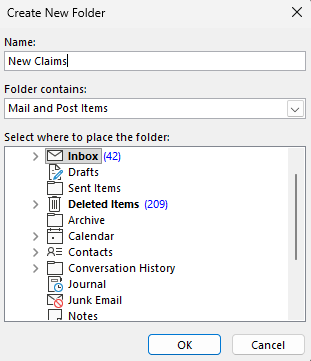
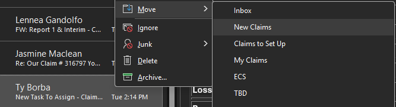
Alt + F11 to open the VBA editor.Enable Macros if a pop up message appears.NewClaimFiles.bas that is downloaded to your device.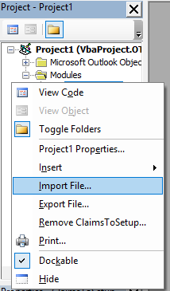
Open the NewClaimFiles module and update two lines near the top of ExtractEmailTableDataToDesktop and near the bottom ResetClaimsSheet as you'd like or leave it be:
targetFolderName = "New Claims" ' must exactly match the folder name from Step 1
filePath = ... & "\New_Claims_List.xlsx" ' change the filename here if you want something different
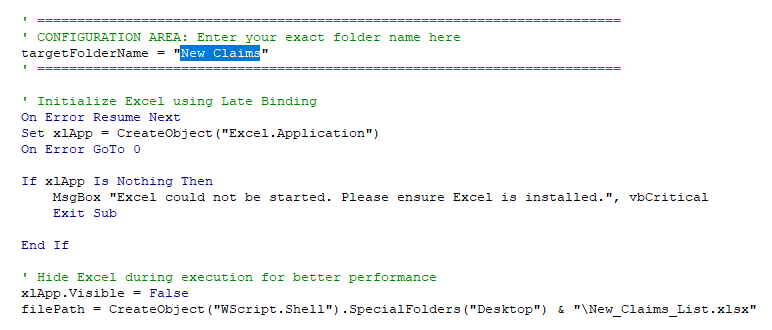
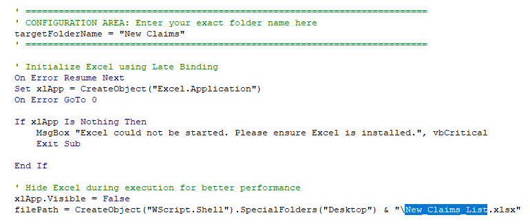
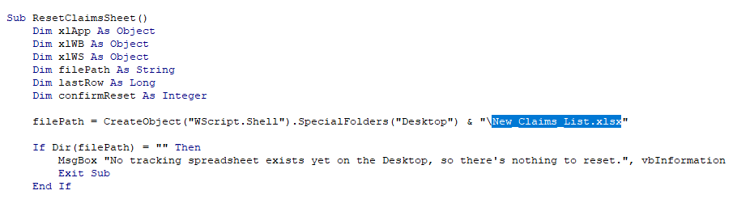
CTRL + s to save any changes made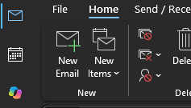
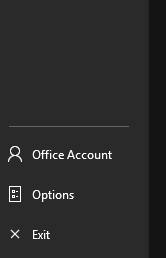
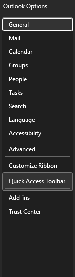
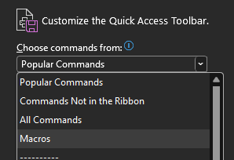
Project1.ExtractEmailTableDataToDesktop → click Modify → rename to Update New Claims List (pick a distinct icon)Project1.ResetClaimsSheet → Modify → rename to Reset Claims Sheet (pick a distinct icon)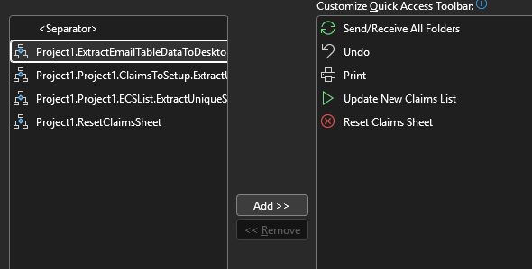
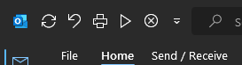
ClaimsToSetup.basRepeat steps 1–4 with these differences:
| Item | New Claims | Claims to Setup |
|---|---|---|
| Folder name | New Claims |
Claims to Set Up |
.bas file |
NewClaimFiles.bas |
ClaimsToSetup.bas |
| Excel file | New_Claims_List.xlsx |
Claims_To_Setup_Data.xlsx |
| Update macro | ExtractEmailTableDataToDesktop |
ExtractUniqueSubjectsToDesktop |
| Reset macro | ResetClaimsSheet |
ResetClaimsToSetupSheet |
| Button names | Update New Claims List / Reset Claims Sheet | Update Claims to Set Up List / Reset Claims to Set Up List |
Everything else (manual folder move, VBA import, Quick Access Toolbar, weekly cleanup order, known errors) is identical.
New Claims and Claims to Set Up folder and click Reset Claims Sheet and Reset Claims To Set Up Sheet.NOTE: Always exit out of the spreadsheet before updating or resetting the list.
Below is how the generated spreadsheet looks like, note that the highlight colors and file number are to be added manually:
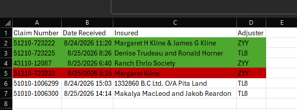
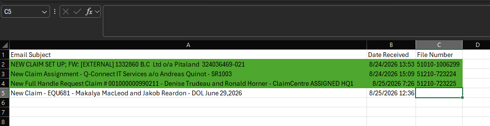
Runtime error 1004 / "file is open in another application"
A previous run didn't close Excel properly, leaving it running invisibly in the background with the file locked.
→ Task Manager (Ctrl+Shift+Esc) → Details tab → end any EXCEL.EXE processes → re-run the macro.
Macros stop running after reopening Outlook Outlook's macro security resets each session by default. → File → Options → Trust Center → Trust Center Settings → Macro Settings → select "Notifications for all macros," then click Enable Content when prompted each time Outlook restarts.
A claim doesn't show up after running the macro Usually means it's already in the sheet (duplicate-check by Claim Number is working as intended) — check existing rows before assuming it failed.